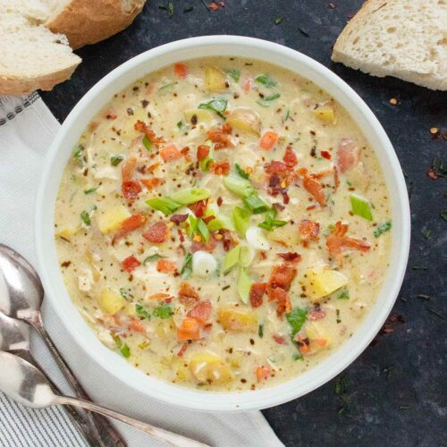

Chicken Potato Soup with Bacon
This thick and hearty Chicken Potato Soup with Bacon is the perfect comfort food for chilly evenings. Packed with tender chunks of chicken, creamy potatoes, and crispy bacon, this soup is a satisfying and flavorful meal. It's easy to make and perfect for leftovers, too. Serve with crusty bread for a delicious and filling dinner.
Ingredients
- 4 slices thick cut smoked bacon, cut into shorter pieces
- 1 small onion, diced
- 2 ribs celery, diced
- 1 medium carrot, diced small or grated
- 1 pound Yukon gold potatoes, cut into 1/2" pieces
- 2 tablespoons all-purpose flour
- 2 tablespoons Dijon mustard
- 1 teaspoon Italian herb blend
- 1 teaspoon dried chives
- 3 cups low-sodium chicken broth
- 1 teaspoon chicken bouillon (such as Better Than Bouillon), optional
- 1 teaspoon Worcestershire sauce
- 3 cups cooked chicken, cubed or shredded (leftover or rotisserie is great)
- 1 cup half and half
- 2 green onions, sliced on the diagonal
- 1 cup chopped spinach leaves
- 1 pinch red pepper flakes
- Kosher salt and freshly ground black pepper
Instructions
- Heat wide bottom Dutch oven or soup pot over medium
- Cook bacon til crispy, flipping often and moving around the pan so it doesn't burn to the bottom of the pot (about 15 minutes).
- Transfer to paper towel-lined plate to drain and rest.
- There should be 1 to 2 tablespoons of bacon grease in the pot. Carefully drain off excess, if necessary.
- Add the onions, celery, carrots and potatoes to the pot. Sauté, stirring frequently, until the aromatics are softened (the potatoes might not be cooked through at this point; that's okay). As the veggies exude their liquids, it will deglaze any crusty brown fond left from the bacon. Be sure to stir frequently. (About 8-10 minutes)
- Spoon in the flour, mustard, and dried herbs over the veggies, and stir everything together. If very stiff and pasty, add a splash of the chicken broth to loosen. Let this mixture cook for a minute or two to remove the rawness of the flour.
- Raise the heat to medium high and begin stirring in the broth 1 cup at a time. This will help the flour thicken the broth.
- Add the Worcestershire sauce and bouillon (if using). Bring the soup up to an active simmer and let bubble gently for 10 minutes.
- When the bacon has cooled, crumble into small bits and set some aside for garnish at serving.
- Reduce heat to low.
- Stir in the half-and-half, followed by the cooked chicken, crumbled bacon, spinach, green onions (reserve some if using for garnish), red pepper flakes and a pinch of black pepper.
- Let the soup rest for 5 or 10 minutes. The spinach will wilt, and the soup will continue to thicken.
- Taste, and adjust with salt and black pepper as needed.
Location
1234 South Pole st.
